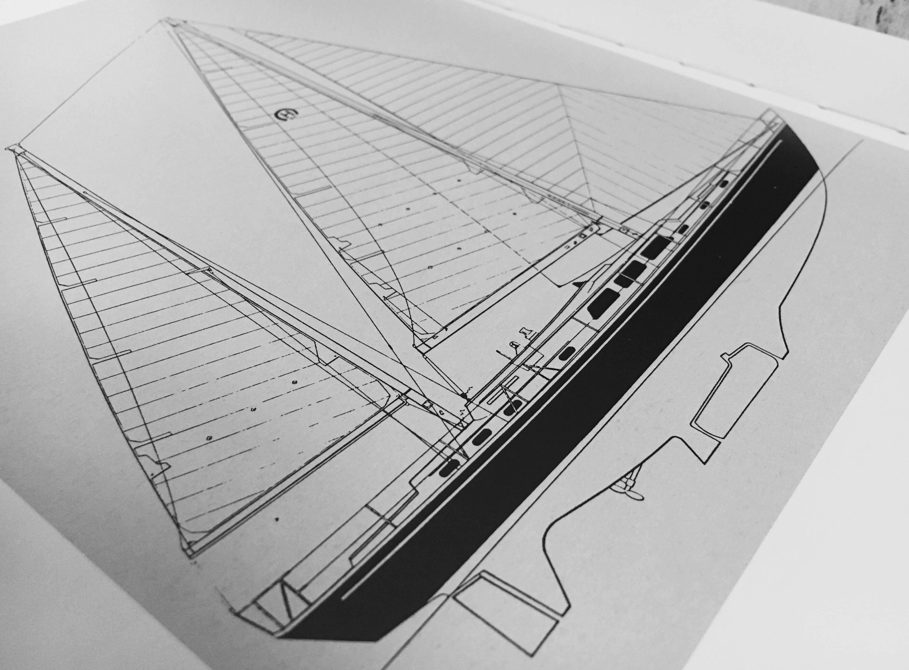

Ladies and gentlemen, welcome to part one of the Learn to Sail series on Sailing Tutorials. This first lesson will teach you how sailboats use the wind to travel nearly anywhere. You’ll learn a few sailing terms, plus a little about how boats are constructed. This lesson ends with some tips on getting out on the water for a sail.
I hope you enjoy this lesson! I’m available on twitter here if you have any questions.
Sailing.
The boat.
The physics of sailing.
etc.
Some of my favorite sailing memories are of my friends on their very first time out on the water. Without fail, everyone we brought on board found something to get excited about. The gorgeous views, the rise and fall of the waves, the radar and autopilot systems, the sun, the splash. I am absolutely sure that you will find something you love, too. Here are a few reasons to be excited.
The sailing community is welcoming and full of hardworking people who make the most of leisure. Sailing friendships are formed in close quarters and built on trust and communication.
On some days, you’ll be soaked by the waves crashing against your boat, and on others, you’ll be chatting with friends and waiting for a breeze. Sailing will always give you something new.
When you’re out on the water — at the whim of the wind — your mind will find a reason to relax. The stress of daily distractions have no place in the rhythm of sailing. It is genuinely meditative.
There are different types of sailboats for different types of sailing, and you’ll come to have a preference. Some boats, like those that people use to sail around the world, are big, heavy, and stable, with living quarters the size of a New York apartment. Others are meant for spending the day on calmer waters and sailing into the marina at sunset for dinner on dry land. The smallest sailboats are lively, fast, and great for racing or getting a workout on the water.
All sailboats share features. The hull, or main body of the boat, supports the sailors and equipment and makes contact with the water. The mast is the vertical pole that holds the sail high in the air. The boom, which connects horizontally with the mast and the bottom foot of the sail, is the adjustable pole that allows sailors to adjust the angle of the sail. Finally, the rudder is the fin at the back of the boat that lets a sailor steer.
Beginners will often start learning on stable daysailors to learn the fundamentals of sailing without too much or too little boat to manage. Another fantastic way to get a feel for different boats is to join other sailors as a crew member. There are some tips for being a new crew member at the end of this tutorial.
Most modern sailboats, from sporty dinghies to 70-foot yachts, rely on two main components to function — propulsion from the wind and sails plus lateral resistance from a vertical fin under the boat.
Sails are designed to work in two ways. They push and pull the boat depending on how the wind passes over them. To understand these two concepts, it is valuable to know the sailing terms windward and leeward. Windward means the side closest to the origin of the wind. Leeward means the side furthest from the wind. For example, if you blow on your hand, the side that feels cool is the windward side.
The first method of propulsion is intuitive. The wind hits the windward side of the sail and pushes the boat like leaves in the wind or a plastic bag in the air. Later in this tutorial, you’ll learn why this must always be happening for the boat to make way.

The second is relatively new, considering the long history of sailing. It is the pull, or lift, achieved when the air rushes along the leeward side of the sail. If you put your hand out the window of a moving car like an airplane wing, you’ve felt lift.
This lift is made possible by the curvature of modern sails. You’ll find that sails aren’t made flat, but rounded to gradually bend the path of the wind. When the wind travels along both sides of the sail, the wind on the leeward side speeds up. This creates lift — a suction that pulls the boat forward.
The two forces of push and lift on the sails isn’t enough to travel towards or perpendicular to the wind without drifting significantly downwind. Sailboats solve this with vertical fins called keels, centerboards, leeboards, or daggerboards that cancel the lateral forces and leave a remainder of forward motion. Any leftover drift is known as leeway.
Onboard, a sailor must always be aware of how her sails are positioned. If her sails are trimmed to tight, the wind will pound against the windward side of the sail and disperse in small cyclones called eddies on the leeward side. Alternatively, if the sail is eased too much, there won’t be enough push on the windward side of the sail to fill the curve of the sail, and it will flap in the breeze like a flag.
When the leading edge of the sail is pointed into the wind, and the sail is positioned correctly, the wind splits into two paths on either side. The wind of the leeward side has to move faster than the wind on the windward side, which creates a leeward suction that pulls the boat forward.
Bonus: expert sailors are constantly editing the overall shape of their sails with tools like the boomvang, outhaul, and cunningham. Doing so with precision can make or break a racer’s performance.
Each point of sail has a name and specific characteristics. You’ll learn them in the next section.
Let’s begin with the one direction you can’t sail — directly into the wind. Sailors call this point of sail in irons. If your boat is in irons, your sail will flap like a flag and you won’t
In Irons, or luffing, is actually a very useful point of sail. For example, a sailor aims her bow directly into the wind to safely raise her sails and even to slow herself down at docks, moorings, or to save a man overboard.
Let’s start moving. The closest point of sail to the oncoming wind is at a 45º angle to either side. This is known as close-hauled. To sail this close to the wind, a sailor trims, or tightens, her sails

Sailing close-hauled is thrilling. Sailors love how fast it feels. At this point of sail, there is a lot of pressure on the sail, which causes the boat to lean, or heel, over.
Bonus: when a sailboat heels over, the surface area of the sails is reduced. One way to impress your skipper — and to enjoy one of the best views from a sailboat — is to move to the high side of the boat and hang your feet off the edge. That will even out the boat just a little bit and give your sails just a little bit more power.
Still working on this.